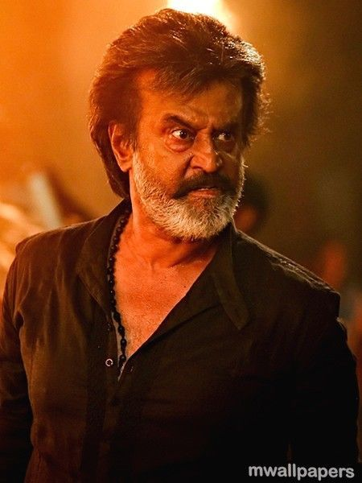
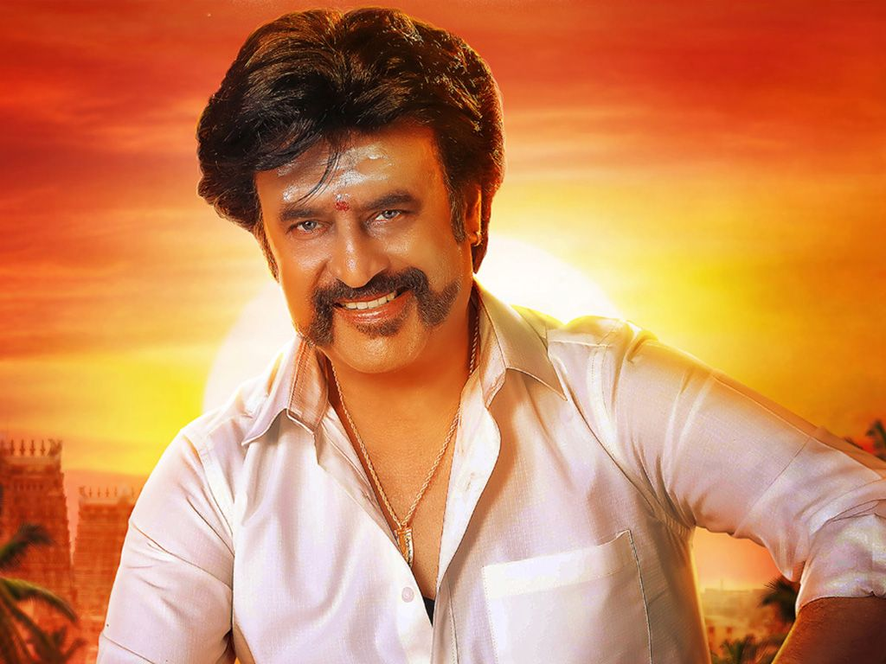
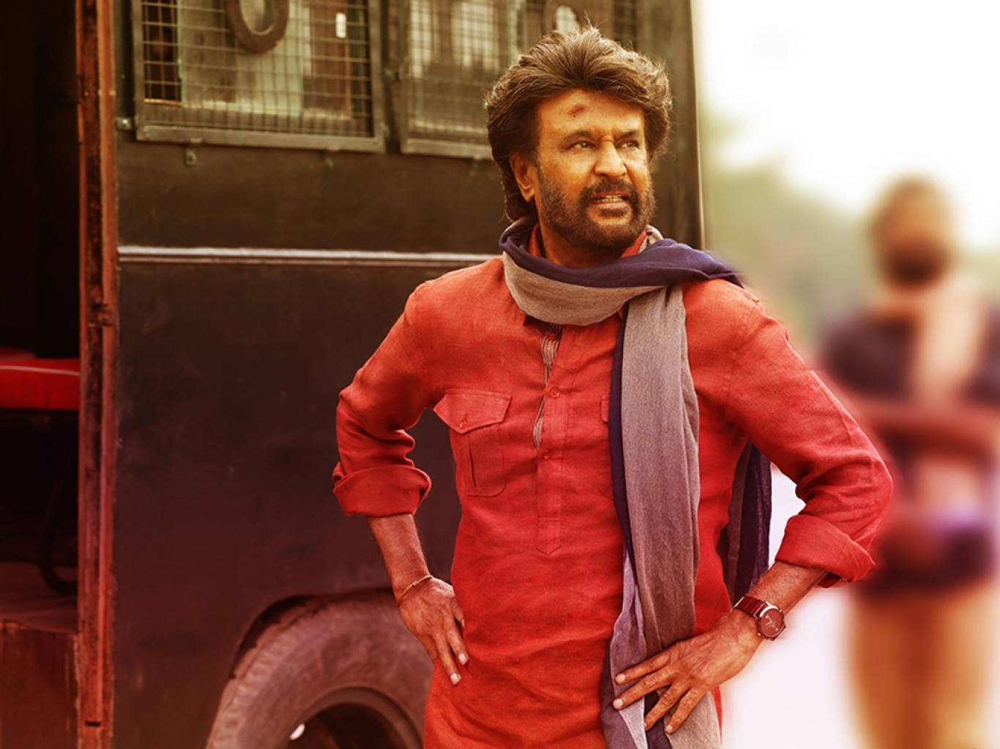
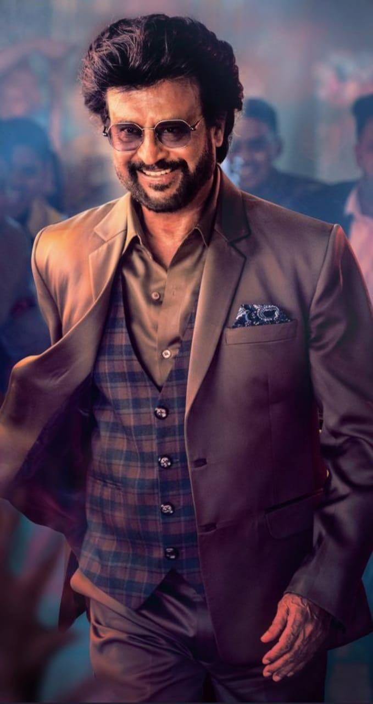
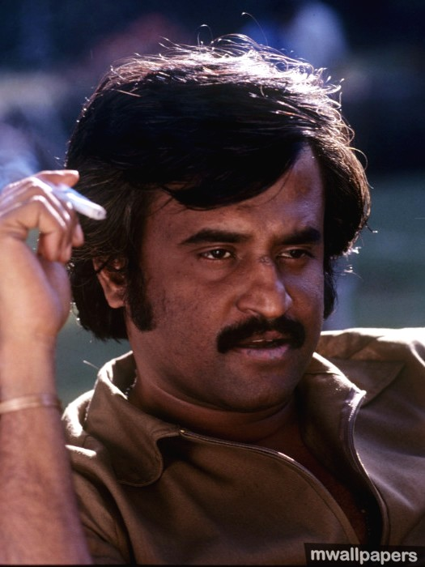
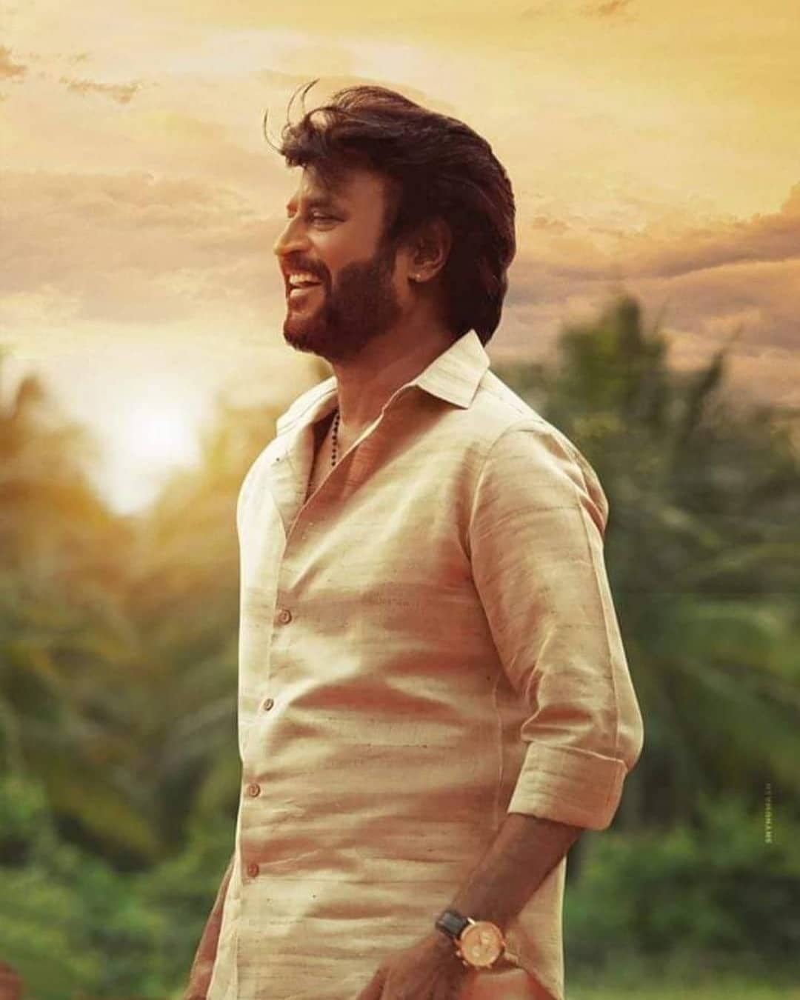
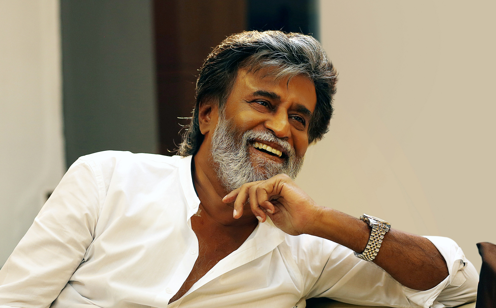
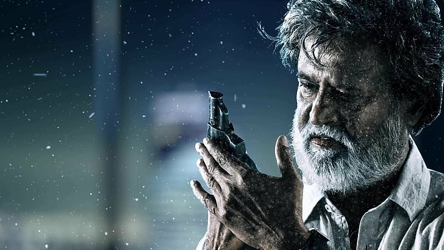
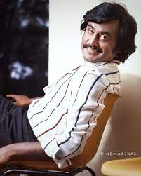
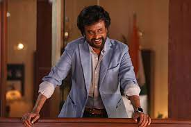

BIO-DATA
Real name: Shivaji Rao Gaekwad
Nickname(s): Rajinikanth, Thalaiva, Superstar
profession(s): Actor, Producer, Screenplay Writer, Philanthropist
Born: 12 December 1950 (age 70) Bangalore, Mysore State, India
Spouse: Latha Rajinikanth (m, 1981)
Daughters: Aishwarya , Soundarya
CAREER
1975–1977: Early career
1978–1989: Experimentation and breakthrough
1990–2001: Commercial stardom
2002–2010: Struggles, resurgence and acclaim
2011–present: Hospitalisation and return
AWARDS AND HONOURS
Rajinikanth has received numerous awards for many of his films, mostly in Tamil. He received his first Filmfare Award for Best Tamil Actor in 1984 for Nallavanuku Nallavan. Later he received Filmfare Award nominations for his performances in Sivaji (2007) and Enthiran (2010). As of 2014, Rajinikanth has received six Tamil Nadu State Film Awards for his performances in various films. He also received numerous awards from Cinema Express and Filmfans' Association for his on-screen performances and off-screen contributions in writing and producing.
Rajinikanth received the Kalaimamani award in 1984 and the M. G. R. Award in 1989, both from the Government of Tamil Nadu. In 1995, the South Indian Film Artistes' Association presented him with the Kalaichelvam Award. He was honoured with the Padma Bhushan (2000) and the Padma Vibhushan (2016) by the Government of India. He was selected as the Indian Entertainer of the Year for 2007 by NDTV, competing against the likes of Shahrukh Khan. The Government of Maharashtra honoured him with the Raj Kapoor Award the same year. He received the Chevalier Sivaji Ganesan Award for Excellence in Indian Cinema at the 4th Vijay Awards. Rajinikanth was also named one of the most influential persons in South Asia by Asiaweek. He was also named by Forbes India as the most influential Indian of the year 2010.In 2011, he was awarded the Entertainer of the Decade Award by NDTV for the year 2010 by the then Indian Minister for Home Affairs P. Chidambaram.In December 2013, he was honoured by NDTV as one among the "25 Greatest Global Living Legends". In 2014, he was presented with the "Centenary Award for Indian Film Personality of the Year" at the 45th International Film Festival of India held at Goa.
PHOTOS









